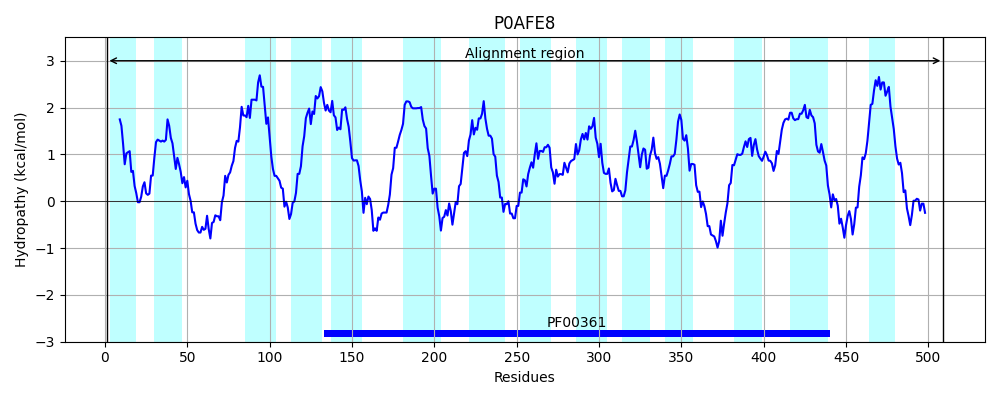
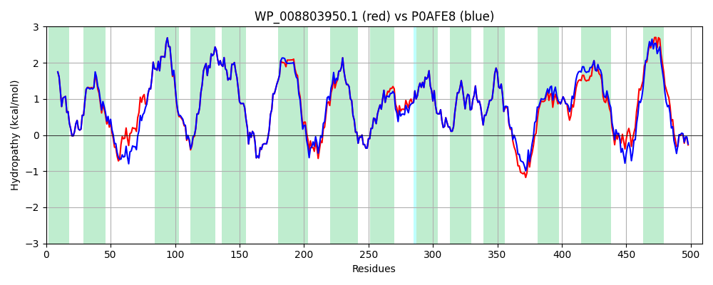

Hit Accession: P0AFE8
Hit TCID: 3.D.1.1.1
Hit Description: gnl|BL_ORD_ID|8819 gnl|TC-DB|P0AFE8|3.D.1.1.1 NADH-quinone oxidoreductase subunit M - Escherichia coli.
Mach Len: 509
e:0.000000
Query TMS Count : 14
Hit TMS Count: 14
TMS-Overlap Score: 13.750000
Predicted Substrates:CHEBI:5584;hydron
BLAST Alignment:
Score: 2525 , Bit scores: 977 bits, E-value: 0.0e+00, Alignment length: 509, Percentage identity: 94
Query: 1 MLLPWLILIPFIGGFLCWQTERFGVKVPRWIALITMGLTLALGLQLWMQGGYSLTQSAGIPQWQSEFVLPWIPRFGISIHLAIDGLSLLMVVLTGLLGVLAVLCSWREIEKYQGFFHLNLMWILGGVIGVFLAIDMFLFFFFWEMMLVPMYFLIALWGHKASDGKTRITAATKFFIYTQASGLVMLIAILALAFVHFNATGVWTFNYEDLLKTPMSHGVEYLLMLGFFIAFAVKMPVVPLHGWLPDAHSQAPTAGSVDLAGILLKTAAYGLLRFALPLFPNASAEFAPIAMWLGVIGIFYGAWMAFAQTDIKRLIAYTSVSHMGFVLIAIYTGSQLAYQGAVIQMIAHGLSAAGLFILCGQLYERLHTRDMRQMGGLWSKIKWLPAMSMFFAVATLGMPGTGNFVGEFMILFGSYKVVPVITVISTFGLVFASVYSLSMLHRAYFGKAKSEIAAKALPGMSLRELSIILLLVVLLVLLGFFPQPILDTSHAAMSNIQQWFVNSVSTTRP 509
MLLPWLILIPFIGGFLCWQTERFGVKVPRWIALITMGLTLAL LQLW+QGGYSLTQSAGIPQWQSEF +PWIPRFGISIHLAIDGLSLLMVVLTGLLGVLAVLCSW+EIEKYQGFFHLNLMWILGGVIGVFLAIDMFLFFFFWEMMLVPMYFLIALWGHKASDGKTRITAATKFFIYTQASGLVMLIAILAL FVH+NATGVWTFNYE+LL TPMS GVEYLLMLGFFIAFAVKMPVVPLHGWLPDAHSQAPTAGSVDLAGILLKTAAYGLLRF+LPLFPNASAEFAPIAMWLGVIGIFYGAWMAFAQTDIKRLIAYTSVSHMGFVLIAIYTGSQLAYQGAVIQMIAHGLSAAGLFILCGQLYER+HTRDMR MGGLWSK+KWLPA+S+FFAVATLGMPGTGNFVGEFMILFGS++VVPVITVISTFGLVFASVYSL+MLHRAYFGKAKS+IA++ LPGMSLREL +ILLLVVLLVLLGF+PQPILDTSH+A+ NIQQWFVNSV+TTRP
Sbjct: 1 MLLPWLILIPFIGGFLCWQTERFGVKVPRWIALITMGLTLALSLQLWLQGGYSLTQSAGIPQWQSEFDMPWIPRFGISIHLAIDGLSLLMVVLTGLLGVLAVLCSWKEIEKYQGFFHLNLMWILGGVIGVFLAIDMFLFFFFWEMMLVPMYFLIALWGHKASDGKTRITAATKFFIYTQASGLVMLIAILALVFVHYNATGVWTFNYEELLNTPMSSGVEYLLMLGFFIAFAVKMPVVPLHGWLPDAHSQAPTAGSVDLAGILLKTAAYGLLRFSLPLFPNASAEFAPIAMWLGVIGIFYGAWMAFAQTDIKRLIAYTSVSHMGFVLIAIYTGSQLAYQGAVIQMIAHGLSAAGLFILCGQLYERIHTRDMRMMGGLWSKMKWLPALSLFFAVATLGMPGTGNFVGEFMILFGSFQVVPVITVISTFGLVFASVYSLAMLHRAYFGKAKSQIASQELPGMSLRELFMILLLVVLLVLLGFYPQPILDTSHSAIGNIQQWFVNSVTTTRP 509 | Protein Hydropathy Plots: |
|---|
 |  |
Pairwise Alignment-Hydropathy Plot:
|
|---|
|  |